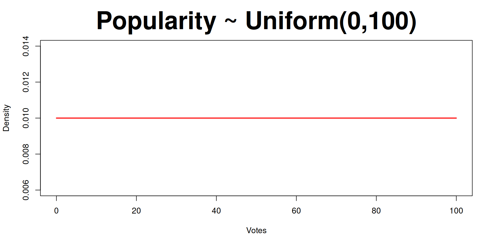
Data Lunch: Week 3
Models
The Open Institute For Social Science
Simpson’s paradox
Two surgeons, one normal and one famous, have different success rates for a procedure. How should we interpret this?
| Success | |
| Normal Surgeon | 89.6% |
| Famous Surgeon | 74.9% |
How about now?
| Standard | Complex | Critical | Total | |
| Normal Surgeon | 97.3% | 66.0% | 38.0% | 89.6% |
| Famous Surgeon | 99.7% | 75.0% | 50.0% | 74.9% |
Models impose order on randomness
What have we done so far?
- We chose a parameter.
- We stated our prior belief.
- We made observations.
- We calculated the likelihood of the things we observed.
- We combined our prior and likelihood to produce an updated posterior belief.
Goals for this week
- Concept: models
- Model definition language
- Explore two types of models:
- Parameter estimates
- Regressions
What is a model?
- Our data is the observation we made (# of Surveys, # of Votes)
- Our model is a theoretical description of how this data was generated, combining:
- Our prior belief about our parameter(s) (Popularity)
- A method of calculating our likelihood from data
Writing Priors
We need a way to describe our prior belief for all values of our parameter (Popularity)
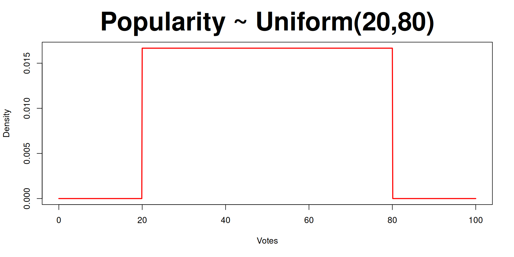
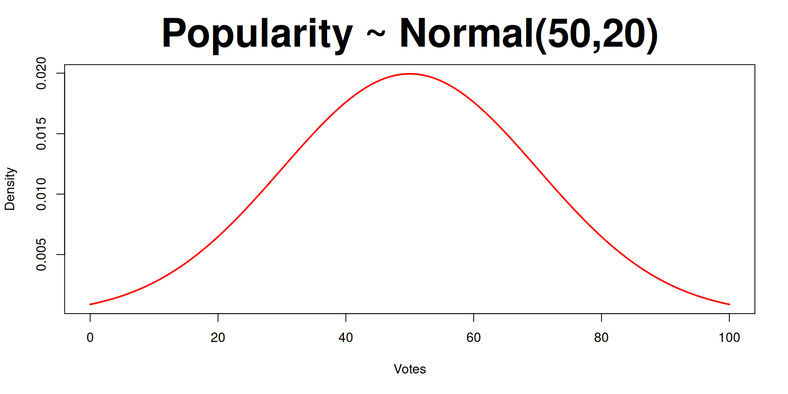
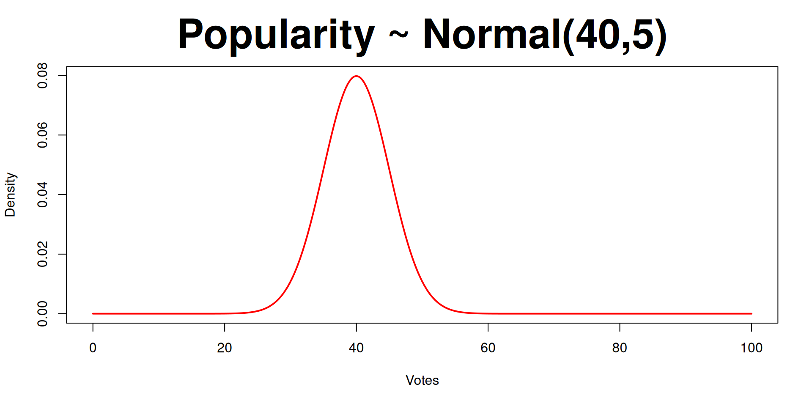
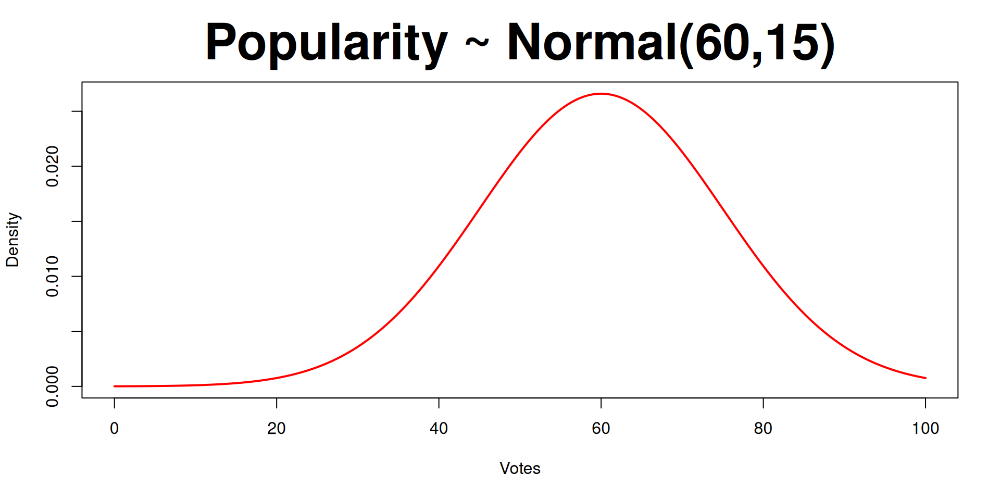
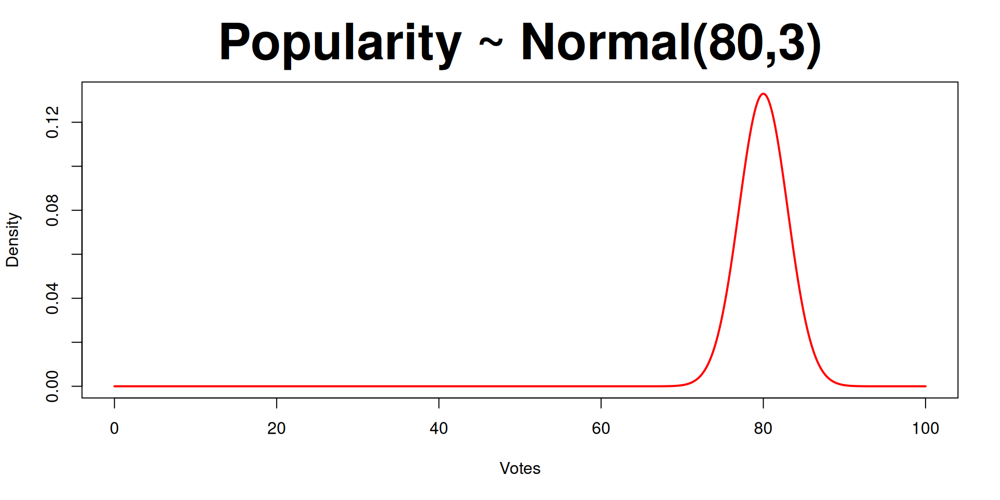
Distributions Demo
#| '!! shinylive warning !!': |
#| shinylive does not work in self-contained HTML documents.
#| Please set `embed-resources: false` in your metadata.
#| standalone: true
library(shiny)
library(bslib)
library(shinyjs)
library(ggplot2)
library(ggiraph)
library(munsell)
# Replace STYLE to add sidebar flex classes
STYLE <- HTML(
"
.btn{
--bs-btn-padding-x: 0 !important;
}
.btnrow {
display: flex;
gap: 4px;
align-items: stretch;
}
/* new: sidebar flex layout */
.sidebar-flex {
display: flex;
flex-direction: column;
height: 100%;
gap: 8px;
}
.sidebar-flex .params {
flex: 1 1 auto;
overflow: auto;
padding-bottom: 8px;
}
.sidebar-flex .simulation {
flex: 0 0 auto;
margin-top: auto; /* ensure it sits at the bottom */
}
/* ensure full-height behavior inside the built-in sidebar container */
.sidebar > .sidebar-content {
display: flex;
flex-direction: column;
height: 100%;
}
"
)
ui <- page_sidebar(
sidebar = sidebar(
open = "always",
width = 400,
tags$style(STYLE),
# wrap params and simulation into two flex units
div(
class = "sidebar-flex",
# parameters area (scrollable)
div(
class = "params",
h2("Probability Distributions"),
selectizeInput(
"distType",
"Distribution Type",
list(
"Bernoulli",
"Binomial",
"Normal",
"Uniform",
"Exponential",
"Poisson",
"Beta",
"Gamma"
),
selected = "Binomial",
multiple = FALSE
),
# BERNOULLI
conditionalPanel(
condition = "input.distType == 'Bernoulli'",
sliderInput(
"bern_p",
"Success Probability",
min = 0,
max = 100,
value = 50,
step = 1,
post = "%"
),
p(
tags$b("Generating Process:"),
"A Bernoulli distribution is generated by running a single trial with two outcomes (success/failure). The result is 1 for success and 0 for failure."
),
p(tags$i(
"Examples: (1) whether a single coin flip is heads (1) or tails (0); (2) whether a single email is spam (1) or not (0); (3) whether a single product is defective (1) or not (0)."
))
),
# BINOMIAL
conditionalPanel(
condition = "input.distType == 'Binomial'",
sliderInput(
"successRate",
"Success Rate",
min = 0,
max = 100,
value = 50,
step = 1,
post = "%"
),
numericInput(
"trialCount",
"Number of Trials",
value = 10,
min = 1,
max = 1000
),
p(
tags$b("Generating Process:"),
"A binomial distribution is generated by repeating a random event a certain number of times and counting how many times a particular outcome occurs."
),
p(tags$i(
"Examples: (1) flipping a coin 20 times and counting how many heads occur; (2) testing 50 light bulbs and counting how many are defective; (3) asking 10 survey respondents a yes/no question and counting how many answer 'yes.'"
))
),
# NORMAL
conditionalPanel(
condition = "input.distType == 'Normal'",
numericInput("mean", "Mean", value = 0),
numericInput("sd", "Standard Deviation", value = 1, min = 0.0001),
p(
tags$b(
"Generating Process:"
),
"A normal distribution is generated when many small and independent random influences combine."
),
p(tags$i(
"Examples: (1) Measurement errors arising from many small sources of variation in a laboratory instrument. (2) Adult human heights within a homogeneous population. (3) Test scores on a well-designed exam taken by many students."
))
),
# UNIFORM
conditionalPanel(
condition = "input.distType == 'Uniform'",
numericInput("umin", "Minimum", value = 0),
numericInput("umax", "Maximum", value = 1),
p(
tags$b(
"Generating Process:"
),
"A uniform distribution is generated when all values over a fixed interval have equal chance of arising."
),
p(tags$i(
"Examples: (1) Choosing a random card from a well-shuffled deck and recording its rank. (2) Rolling a six-sided die and recording the value. (3) Picking a number between 1 and 100 randomly."
))
),
# EXPONENTIAL
conditionalPanel(
condition = "input.distType == 'Exponential'",
numericInput("exp_rate", "Rate (λ)", value = 1, min = 1e-8),
p(
tags$b(
"Generating Process:"
),
"An exponential distribution is generated by measuring the waiting time until the next occurrence of an event that happens randomly at a constant average rate."
),
p(tags$i(
"Examples: (1) Time between incoming calls at a call center when calls occur randomly. (2) Time until an electronic device fails randomly. (3) Time until a cat is adopted from an animal shelter when all animals are adopted at a steady rate."
))
),
# POISSON
conditionalPanel(
condition = "input.distType == 'Poisson'",
numericInput("poisson_lambda", "Lambda (mean)", value = 1, min = 0),
p(
tags$b(
"Generating Process:"
),
"A Poisson distribution is generated by counting how many events occur within a fixed interval when events happen independently and randomly at a constant average rate."
),
p(tags$i(
"Examples: (1) Number of emails received in one hour. (2) Number of typing errors on a page of text. (3) Number of customers arriving at a store in a 10-minute period."
))
),
# BETA
conditionalPanel(
condition = "input.distType == 'Beta'",
numericInput("beta_alpha", "Alpha (α)", value = 2, min = 1e-8),
numericInput("beta_beta", "Beta (β)", value = 2, min = 1e-8),
p(
tags$b("Generating Process:"),
"A beta distribution is generated by modeling an unknown probability or proportion on the interval [0,1] using accumulated evidence about successes and failures, producing a flexible distribution over plausible values of that probability."
),
p(tags$i(
"Examples: (1) Modeling the true success probability of a coin after observing some number of heads and tails. (2) Modeling the fraction of time a machine is operational when past uptime and downtime observations inform the estimate. (3) Describing the proportion of a population with a certain trait when prior information and sample data are combined."
))
),
# GAMMA
conditionalPanel(
condition = "input.distType == 'Gamma'",
numericInput("gamma_shape", "Shape (k)", value = 2, min = 1e-8),
numericInput("gamma_rate", "Rate (θ⁻¹)", value = 1, min = 1e-8),
p(
tags$b(
"Generating Process:"
),
"A gamma distribution is generated by measuring the total waiting time until a fixed number of independent events occur."
),
p(tags$i(
"Examples: (1) Total waiting time for a set number of calls to arrive at a call center with steady arrival intensity. (2) Total time until the 5th customer arrives at a service desk. (3) Time until a system experiences its 3rd failure when failures occur randomly at a constant rate."
))
)
), # end params
# simulation area pinned to bottom
div(
hr(),
class = "simulation",
h3("Simulation"),
div(
div(
style = "padding-bottom: 6px;",
class = "btnrow",
actionButton("draw1", "Run 1", style = "flex: 1;"),
actionButton("draw10", "×10", style = "flex: 1;"),
actionButton("draw100", "×100", style = "flex: 1;"),
actionButton("draw1000", "×1000", style = "flex: 1;")
),
div(
class = "btnrow",
actionButton(
"reset",
"Reset",
class = "btn btn-danger",
style = "flex: 1;"
)
)
)
) # end simulation
) # end sidebar-flex
),
mainPanel(
width = 12,
girafeOutput("plot", width = "100%"),
uiOutput("sim_list") # simulation results list
)
)
server <- function(input, output, session) {
draws <- reactiveVal(numeric(0))
observeEvent(input$axis_modal, {
showModal(
modalDialog(
title = "Axis limits",
checkboxInput(
"manual_xlim",
"Manual x-axis range",
value = isTRUE(input$manual_xlim)
),
conditionalPanel(
condition = "input.manual_xlim === true",
numericInput("xlim_min", "x-min", value = input$xlim_min %||% NA),
numericInput("xlim_max", "x-max", value = input$xlim_max %||% NA)
),
checkboxInput(
"manual_ylim",
"Manual y-axis range",
value = isTRUE(input$manual_ylim)
),
conditionalPanel(
condition = "input.manual_ylim === true",
numericInput("ylim_min", "y-min", value = input$ylim_min %||% NA),
numericInput("ylim_max", "y-max", value = input$ylim_max %||% NA)
),
footer = tagList(
tags$button(
type = "button",
class = "btn btn-secondary",
`data-bs-dismiss` = "modal",
style = "padding-left:10px; padding-right:10px;",
"Close"
)
)
)
)
})
observeEvent(
list(
input$trialCount,
input$successRate,
input$bern_p,
input$distType,
input$mean,
input$sd,
input$umin,
input$umax,
input$exp_rate,
input$poisson_lambda,
input$beta_alpha,
input$beta_beta,
input$gamma_shape,
input$gamma_rate,
input$manual_xlim,
input$xlim_min,
input$xlim_max,
input$manual_ylim,
input$ylim_min,
input$ylim_max
),
{
draws(numeric(0))
},
ignoreInit = TRUE
)
# helper: sanitize a positive numeric input
safe_pos <- function(x, fallback = 1) {
if (is.null(x) || !is.finite(x) || x <= 0) fallback else x
}
safe_nonneg <- function(x, fallback = 1) {
if (is.null(x) || !is.finite(x) || x < 0) fallback else x
}
add_draws <- function(k) {
new <- switch(
input$distType,
"Bernoulli" = rbinom(k, size = 1, prob = input$bern_p / 100),
"Binomial" = rbinom(
k,
size = input$trialCount,
prob = input$successRate / 100
),
"Normal" = rnorm(k, mean = input$mean, sd = safe_pos(input$sd)),
"Uniform" = runif(k, min = input$umin, max = input$umax),
"Exponential" = rexp(k, rate = safe_pos(input$exp_rate)),
"Poisson" = rpois(k, lambda = safe_nonneg(input$poisson_lambda)),
"Beta" = rbeta(
k,
shape1 = safe_pos(input$beta_alpha),
shape2 = safe_pos(input$beta_beta)
),
"Gamma" = rgamma(
k,
shape = safe_pos(input$gamma_shape),
rate = safe_pos(input$gamma_rate)
),
numeric(0)
)
draws(c(draws(), new))
}
observeEvent(input$draw1, add_draws(1))
observeEvent(input$draw10, add_draws(10))
observeEvent(input$draw100, add_draws(100))
observeEvent(input$draw1000, add_draws(1000))
observeEvent(input$reset, {
# clear simulated draws
draws(numeric(0))
# reset UI controls to their defaults (match UI definitions)
updateSelectizeInput(session, "distType", selected = "Binomial")
updateSliderInput(session, "bern_p", value = 50)
updateSliderInput(session, "successRate", value = 50)
updateNumericInput(session, "trialCount", value = 10)
updateNumericInput(session, "mean", value = 0)
updateNumericInput(session, "sd", value = 1)
updateNumericInput(session, "umin", value = 0)
updateNumericInput(session, "umax", value = 1)
updateNumericInput(session, "exp_rate", value = 1)
updateNumericInput(session, "poisson_lambda", value = 1)
updateNumericInput(session, "beta_alpha", value = 2)
updateNumericInput(session, "beta_beta", value = 2)
updateNumericInput(session, "gamma_shape", value = 2)
updateNumericInput(session, "gamma_rate", value = 1)
updateCheckboxInput(session, "manual_xlim", value = FALSE)
updateNumericInput(session, "xlim_min", value = NA)
updateNumericInput(session, "xlim_max", value = NA)
updateCheckboxInput(session, "manual_ylim", value = FALSE)
updateNumericInput(session, "ylim_min", value = NA)
updateNumericInput(session, "ylim_max", value = NA)
})
output$plot <- renderGirafe({
sim <- draws()
# ---------- helpers ----------
empty_plot <- function() girafe(ggplot(), width_svg = 12, height_svg = 8)
# common theme
base_theme <- theme_minimal() +
theme(plot.margin = margin(10, 30, 30, 10))
# ---------- spec builder ----------
get_dist_spec <- function(sim) {
dist <- input$distType
# ---- BERNOULLI ----
if (dist == "Bernoulli") {
p <- input$bern_p / 100
theory <- data.frame(
x = 0:1,
prob = dbinom(0:1, 1, p)
)
list(
type = "discrete",
theory = theory,
xlim = c(0, 1),
ymax = max(theory$prob),
xlabel = "Outcome (0/1)",
ylabel = "Probability",
tooltip_theory = function(df) {
paste0(
"Outcome = ",
df$x,
"<br>Probability = ",
round(df$prob, 4)
)
}
)
} else if (dist == "Binomial") {
# ---- BINOMIAL ----
n <- input$trialCount
p <- input$successRate / 100
theory <- data.frame(
x = 0:n,
prob = dbinom(0:n, n, p)
)
list(
type = "discrete",
theory = theory,
xlim = c(0, n),
ymax = max(theory$prob),
xlabel = "Number of successes",
ylabel = "Probability",
tooltip_theory = function(df) {
paste0(
"Success = ",
df$x,
" out of ",
n,
"<br>Probability = ",
round(df$prob, 4)
)
}
)
} else if (dist == "Normal") {
# ---- NORMAL ----
mu <- input$mean
sd <- safe_pos(input$sd)
x_min <- mu - 4 * sd
x_max <- mu + 4 * sd
xs <- seq(x_min, x_max, length.out = 400)
theory <- data.frame(
x = xs,
density = dnorm(xs, mu, sd)
)
list(
dist = "Normal",
params = list(mu = mu, sd = sd),
type = "continuous",
theory = theory,
xlim = c(x_min, x_max),
ymax = max(theory$density),
xlabel = "Value",
ylabel = "Density"
)
} else if (dist == "Uniform") {
# ---- UNIFORM ----
a <- input$umin
b <- input$umax
if (b <= a) {
return(NULL)
}
xs <- seq(a, b, length.out = 400)
theory <- data.frame(
x = xs,
density = dunif(xs, a, b)
)
list(
type = "continuous",
theory = theory,
xlim = c(a, b),
ymax = max(theory$density),
xlabel = "Value",
ylabel = "Density",
expand_mult = c(0, .85)
)
} else if (dist == "Exponential") {
# ---- EXPONENTIAL ----
rate <- safe_pos(input$exp_rate)
x_min <- 0
x_max <- qexp(.999, rate)
xs <- seq(x_min, x_max, length.out = 400)
theory <- data.frame(
x = xs,
density = dexp(xs, rate)
)
list(
type = "continuous",
theory = theory,
xlim = c(x_min, x_max),
ymax = max(theory$density),
xlabel = "Value",
ylabel = "Density"
)
} else if (dist == "Poisson") {
# ---- POISSON ----
lambda <- safe_nonneg(input$poisson_lambda)
x_max_theory <- ceiling(qpois(.999, lambda))
x_max_sim <- if (length(sim)) {
max(ceiling(sim), x_max_theory)
} else {
x_max_theory
}
xs <- 0:x_max_sim
theory <- data.frame(
x = xs,
prob = dpois(xs, lambda)
)
list(
type = "discrete",
theory = theory,
xlim = c(0, x_max_sim),
ymax = max(theory$prob),
xlabel = "k",
ylabel = "Probability",
tooltip_theory = function(df) {
paste0("k = ", df$x, "<br>Probability = ", round(df$prob, 4))
}
)
} else if (dist == "Beta") {
# ---- BETA ----
a <- safe_pos(input$beta_alpha)
b <- safe_pos(input$beta_beta)
xs <- seq(0, 1, length.out = 400)
theory <- data.frame(
x = xs,
density = dbeta(xs, a, b)
)
list(
type = "continuous",
theory = theory,
xlim = c(0, 1),
ymax = max(theory$density),
xlabel = "Value",
ylabel = "Density"
)
} else if (dist == "Gamma") {
# ---- GAMMA ----
shape <- safe_pos(input$gamma_shape)
rate <- safe_pos(input$gamma_rate)
x_min <- 0
x_max <- qgamma(.999, shape, rate)
xs <- seq(x_min, x_max, length.out = 400)
theory <- data.frame(
x = xs,
density = dgamma(xs, shape, rate)
)
list(
type = "continuous",
theory = theory,
xlim = c(x_min, x_max),
ymax = max(theory$density),
xlabel = "Value",
ylabel = "Density"
)
} else {
NULL
}
}
# ---------- build plot ----------
spec <- get_dist_spec(sim)
if (is.null(spec)) {
return(empty_plot())
}
apply_manual_xlim <- function(spec) {
if (!isTRUE(input$manual_xlim)) {
return(spec)
}
xmin <- input$xlim_min
xmax <- input$xlim_max
if (
is.null(xmin) ||
is.null(xmax) ||
!is.finite(xmin) ||
!is.finite(xmax) ||
xmin >= xmax
) {
return(spec)
}
spec$xlim <- c(xmin, xmax)
if (spec$type == "continuous") {
if (identical(spec$dist, "Normal")) {
mu <- spec$params$mu
sd <- spec$params$sd
xs <- seq(xmin, xmax, length.out = 400)
spec$theory <- data.frame(
x = xs,
density = dnorm(xs, mu, sd)
)
} else {
spec$theory <- spec$theory[
spec$theory$x >= xmin & spec$theory$x <= xmax,
,
drop = FALSE
]
}
ymax <- max(spec$theory$density, na.rm = TRUE)
if (is.finite(ymax)) {
spec$ymax <- ymax
}
} else {
spec$theory <- spec$theory[
spec$theory$x >= xmin & spec$theory$x <= xmax,
,
drop = FALSE
]
ymax <- max(spec$theory$prob, na.rm = TRUE)
if (is.finite(ymax)) {
spec$ymax <- ymax
}
}
spec
}
spec <- apply_manual_xlim(spec)
apply_manual_ylim <- function(spec) {
if (!isTRUE(input$manual_ylim)) {
return(spec)
}
ymin <- input$ylim_min
ymax <- input$ylim_max
if (
is.null(ymin) ||
is.null(ymax) ||
!is.finite(ymin) ||
!is.finite(ymax) ||
ymin >= ymax
) {
return(spec)
}
spec$ylim <- c(ymin, ymax)
spec
}
spec <- apply_manual_ylim(spec)
g <- ggplot()
# ---- simulated layer ----
if (spec$type == "continuous") {
if (length(sim) > 0) {
g <- g +
geom_histogram_interactive(
data = data.frame(x = sim),
aes(
x = x,
y = after_stat(density),
tooltip = paste0("Count: ", after_stat(count)),
data_id = after_stat(x)
),
bins = 40,
boundary = spec$xlim[1],
fill = "steelblue",
alpha = .6,
color = "white",
linewidth = .4
)
}
g <- g +
geom_line(
data = spec$theory,
aes(x = x, y = density),
linewidth = 1
)
} else if (spec$type == "discrete") {
# sim df
df_sim <- if (length(sim) == 0) {
data.frame(x = integer(), prob = numeric(), count = integer())
} else {
tab <- table(sim)
data.frame(
x = as.integer(names(tab)),
count = as.integer(tab),
prob = as.integer(tab) / sum(tab)
)
}
g <- g +
geom_col_interactive(
data = df_sim,
aes(
x = x,
y = prob,
tooltip = paste0(
"Count: ",
count,
" out of ",
length(sim),
"<br>Proportion: ",
round(prob, 4)
),
data_id = x
),
fill = "steelblue",
width = .8,
alpha = .6
) +
geom_line(
data = spec$theory,
aes(x = x, y = prob),
linewidth = 1
) +
geom_point_interactive(
data = spec$theory,
aes(
x = x,
y = prob,
tooltip = spec$tooltip_theory(spec$theory),
data_id = paste0("theory_", spec$theory$x)
),
size = 3
) +
scale_x_continuous(
breaks = scales::breaks_pretty(n = 10, integer = TRUE)
)
}
expand_mult <- spec$expand_mult %||% c(0, .25)
g <- g +
coord_cartesian(
xlim = spec$xlim,
ylim = spec$ylim %||% c(0, spec$ymax),
clip = "off"
) +
scale_y_continuous(expand = expansion(mult = expand_mult)) +
labs(x = spec$xlabel, y = spec$ylabel) +
base_theme
girafe(ggobj = g, width_svg = 12, height_svg = 8)
})
# compact single-line simulation values, most recent on the left in bold
output$sim_list <- renderUI({
sim_vals <- draws()
# small formatter: integers as integers, others rounded to 2 decimals
fmt_val <- function(x) {
if (is.na(x)) {
return("NA")
}
if (!is.numeric(x)) {
return(as.character(x))
}
if (abs(x - round(x)) < 1e-8) {
as.character(as.integer(round(x)))
} else {
sprintf("%.2f", round(x, 2))
}
}
if (length(sim_vals) == 0) {
return(tags$div(
style = "display:flex; align-items:center; gap:12px;",
actionButton(
"axis_modal",
"Axis limits",
style = "padding-left:10px; padding-right:10px;"
),
tags$div(
style = "min-width:0;",
tags$div(
"Simulation Results:",
style = "font-weight:600; margin-bottom:4px;"
),
tags$div("No simulations yet", style = "font-size:0.9em; color:#666;")
)
))
}
max_show <- 100L
show_vals <- tail(sim_vals, max_show)
show_vals_rev <- rev(show_vals) # most recent first (left)
spans <- lapply(seq_along(show_vals_rev), function(i) {
v <- show_vals_rev[i]
txt <- fmt_val(v)
if (i == 1L) {
tags$span(
txt,
style = "font-weight:700; margin-right:10px; white-space:nowrap;"
)
} else {
tags$span(
txt,
style = "color:#333; margin-right:10px; white-space:nowrap;"
)
}
})
tags$div(
style = "display:flex; align-items:center; gap:12px;",
actionButton(
"axis_modal",
"Axis limits",
style = "padding-left:10px; padding-right:10px;"
),
tags$div(
style = "min-width:0;",
tags$div(
"Recent simulations:",
style = "font-weight:600; margin-bottom:4px;"
),
tags$div(
style = "font-size:0.9em; padding-top:2px; padding-bottom:6px; overflow-x:auto; white-space:nowrap;",
spans
)
)
)
})
}
shinyApp(ui, server)Writing likelihood functions
We need a way to describe how our data got made, linking our parameter (Popularity) to our observed data (Surveys and Votes)
\[ {\color{green}{Votes}} \sim \mathrm{Binomial}({\color{green}{Surveys}}, {\color{blue}{Popularity}}) \]
Observed Data
Parameter(s)
Writing complete models
\[ \begin{align} \color{green}{Votes} &\sim \color{green}{\mathrm{Binomial}(Surveys, Popularity)} \\ \color{red}{Popularity} &\sim \color{red}{\mathrm{Normal}(60\%, 15\%)} \end{align} \]
Likelihood function
Prior Belief
Generative Model Demo
#| '!! shinylive warning !!': |
#| shinylive does not work in self-contained HTML documents.
#| Please set `embed-resources: false` in your metadata.
#| standalone: true
library(shiny)
library(bslib)
library(ggplot2)
library(tibble)
library(ggiraph)
INITIAL_ALPHA_FEMALE <- -40
INITIAL_ALPHA_MALE <- -32
INITIAL_BETA <- 0.6
INITIAL_SIGMA <- 5
N_POINTS <- 200
HEIGHT_MEAN_CM <- 155
HEIGHT_SD_CM <- 25
KG_TO_LB <- 2.20462
CM_PER_IN <- 2.54
CSS <- "
.plot-wrap {
position: relative;
width: 100%;
padding-left: 25px;
padding-bottom: 25px;
}
.height-units-inline {
position: absolute;
left: 50%;
bottom: 0;
transform: translateX(-50%);
width: 360px;
z-index: 10;
}
.weight-units-inline {
position: absolute;
left: 0;
bottom: 0;
transform: translateY(-50%) rotate(-90deg);
transform-origin: left top;
width: 45%;
z-index: 10;
}
.height-units-inline .shiny-input-container,
.weight-units-inline .shiny-input-container {
margin-bottom: 0;
display: flex;
align-items: center;
gap: 0.5rem;
}
.weight-units-inline .shiny-input-container {
justify-content: center;
width: 100%;
}
.height-units-inline label,
.weight-units-inline label {
margin-bottom: 0;
font-weight: 600;
white-space: nowrap;
}
.height-units-inline .form-select,
.weight-units-inline .form-select,
.height-units-inline select,
.weight-units-inline select {
flex: 1;
min-width: 0;
}
.height-units-inline .selectize-control,
.weight-units-inline .selectize-control {
width: 200px;
}
"
param_row <- function(input_ui, button_id, button_margin = "1rem") {
tags$div(
class = "d-flex flex-nowrap gap-2 align-items-end",
input_ui,
tags$div(
class = "d-flex flex-column justify-content-end",
actionButton(
button_id,
"↺",
class = "btn-primary",
style = paste0("margin-bottom: ", button_margin, ";")
)
)
)
}
ui <- page_sidebar(
tags$head(tags$style(HTML(CSS))),
sidebar = sidebar(
open = "always",
width = 430,
style = "gap: 10px",
withMathJax(),
tags$h2("Generative Models"),
checkboxInput("include_sex", "Include sex?", value = FALSE),
tags$div(uiOutput("modelDef")),
tags$hr(),
tags$h3("Parameters"),
uiOutput("alpha_ui"),
param_row(
numericInput(
"beta",
"𝛽 (coefficient)",
value = INITIAL_BETA,
width = "100%"
),
"generate_beta"
),
param_row(
sliderInput(
"sigma",
"𝜎 (residual deviation)",
min = 0,
max = 100,
value = INITIAL_SIGMA,
width = "100%"
),
"generate_sigma",
button_margin = "1.5rem"
),
# tags$hr(),
# actionButton(
# "generate_data",
# "Generate new data",
# class = "btn-secondary w-100"
# )
),
tags$p("What are we doing here?"),
tags$ul(
tags$li(
"When fitting a statistical model, we use observed data to infer the values of unknown parameters."
),
tags$li(
"When simulating from a generative model, we do the opposite: we choose parameter values and generate synthetic data from them to see what kinds of predictions the model would make."
)
),
div(
class = "plot-wrap",
div(
class = "weight-units-inline",
selectInput(
"weight_units",
"Weight",
choices = c("Kilograms", "Pounds"),
selected = "Kilograms"
)
),
girafeOutput("generatedPlot"),
div(
class = "height-units-inline",
selectInput(
"height_units",
"Height",
choices = c("Centimeters", "Inches", "Standardized Units"),
selected = "Centimeters"
)
)
)
)
server <- function(input, output, session) {
root_alpha_female <- reactiveVal(INITIAL_ALPHA_FEMALE)
root_alpha_male <- reactiveVal(INITIAL_ALPHA_MALE)
root_beta <- reactiveVal(INITIAL_BETA)
root_sigma <- reactiveVal(INITIAL_SIGMA)
updating_inputs <- reactiveVal(FALSE)
weight_scale <- reactive({
switch(
input$weight_units,
"Kilograms" = 1,
"Pounds" = KG_TO_LB,
1
)
})
alpha_shift_root <- reactive({
switch(
input$height_units,
"Centimeters" = 0,
"Inches" = 0,
"Standardized Units" = HEIGHT_MEAN_CM * root_beta(),
0
)
})
beta_display_scale <- reactive({
switch(
input$height_units,
"Centimeters" = 1,
"Inches" = CM_PER_IN,
"Standardized Units" = HEIGHT_SD_CM,
1
) *
weight_scale()
})
display_alpha_female <- reactive({
(root_alpha_female() + alpha_shift_root()) * weight_scale()
})
display_alpha_male <- reactive({
(root_alpha_male() + alpha_shift_root()) * weight_scale()
})
display_alpha <- reactive({
(root_alpha_female() + alpha_shift_root()) * weight_scale()
})
display_beta <- reactive({
root_beta() * beta_display_scale()
})
display_sigma <- reactive({
root_sigma() * weight_scale()
})
height_unit_label <- reactive({
switch(
input$height_units,
"Centimeters" = "cm",
"Inches" = "in",
"Standardized Units" = "z",
""
)
})
weight_unit_label <- reactive({
switch(
input$weight_units,
"Kilograms" = "kg",
"Pounds" = "lb",
""
)
})
canonical_to_display_height <- function(height_cm, units) {
switch(
units,
"Centimeters" = height_cm,
"Inches" = height_cm / CM_PER_IN,
"Standardized Units" = (height_cm - HEIGHT_MEAN_CM) / HEIGHT_SD_CM,
height_cm
)
}
canonical_to_display_weight <- function(weight_kg, units) {
switch(
units,
"Kilograms" = weight_kg,
"Pounds" = weight_kg * KG_TO_LB,
weight_kg
)
}
set_root_alpha_from_display <- function(
alpha_display,
which = c("female", "male"),
beta_root = root_beta()
) {
which <- match.arg(which)
shift <- switch(
input$height_units,
"Centimeters" = 0,
"Inches" = 0,
"Standardized Units" = HEIGHT_MEAN_CM * beta_root,
0
)
alpha_root <- (alpha_display / weight_scale()) - shift
if (which == "female") {
root_alpha_female(alpha_root)
} else {
root_alpha_male(alpha_root)
}
}
sync_inputs_from_root <- function() {
vals <- isolate(list(
include_sex = isTRUE(input$include_sex),
alpha = round(display_alpha(), 3),
alpha_female = round(display_alpha_female(), 3),
alpha_male = round(display_alpha_male(), 3),
beta = round(display_beta(), 3),
sigma = min(max(display_sigma(), 0), 100)
))
updating_inputs(TRUE)
on.exit(updating_inputs(FALSE), add = TRUE)
freezeReactiveValue(input, "alpha")
freezeReactiveValue(input, "alpha_female")
freezeReactiveValue(input, "alpha_male")
freezeReactiveValue(input, "beta")
freezeReactiveValue(input, "sigma")
if (vals$include_sex) {
updateNumericInput(session, "alpha_female", value = vals$alpha_female)
updateNumericInput(session, "alpha_male", value = vals$alpha_male)
} else {
updateNumericInput(session, "alpha", value = vals$alpha)
}
updateNumericInput(session, "beta", value = vals$beta)
updateSliderInput(session, "sigma", value = vals$sigma)
}
sim_data <- reactiveVal(NULL)
regenerate_data <- function() {
sim_data(list(
height_z = rnorm(N_POINTS, 0, 1),
resid_z = rnorm(N_POINTS, 0, 1),
sex = rbinom(N_POINTS, 1, 0.5)
))
}
regenerate_data()
observeEvent(input$generate_data, {
regenerate_data()
})
observeEvent(input$generate_alpha, {
if (isTRUE(input$include_sex)) {
root_alpha_female(rnorm(1, mean = 60, sd = 10))
root_alpha_male(rnorm(1, mean = 60, sd = 10))
} else {
root_alpha_female(rnorm(1, mean = 60, sd = 10))
root_alpha_male(root_alpha_female())
}
sync_inputs_from_root()
})
observeEvent(input$generate_alpha_female, {
root_alpha_female(rnorm(1, mean = 60, sd = 10))
sync_inputs_from_root()
})
observeEvent(input$generate_alpha_male, {
root_alpha_male(rnorm(1, mean = 60, sd = 10))
sync_inputs_from_root()
})
observeEvent(input$generate_beta, {
new_root_beta <- rnorm(1, mean = 0, sd = 5)
if (identical(input$height_units, "Standardized Units")) {
if (isTRUE(input$include_sex)) {
alpha_female_disp <- isolate(as.numeric(input$alpha_female))
alpha_male_disp <- isolate(as.numeric(input$alpha_male))
root_beta(new_root_beta)
set_root_alpha_from_display(
alpha_female_disp,
"female",
beta_root = new_root_beta
)
set_root_alpha_from_display(
alpha_male_disp,
"male",
beta_root = new_root_beta
)
updating_inputs(TRUE)
on.exit(updating_inputs(FALSE), add = TRUE)
freezeReactiveValue(input, "alpha_female")
freezeReactiveValue(input, "alpha_male")
freezeReactiveValue(input, "beta")
updateNumericInput(
session,
"alpha_female",
value = round(alpha_female_disp, 3)
)
updateNumericInput(
session,
"alpha_male",
value = round(alpha_male_disp, 3)
)
updateNumericInput(
session,
"beta",
value = round(new_root_beta * beta_display_scale(), 3)
)
} else {
alpha_disp <- isolate(as.numeric(input$alpha))
root_beta(new_root_beta)
set_root_alpha_from_display(
alpha_disp,
"female",
beta_root = new_root_beta
)
root_alpha_male(root_alpha_female())
updating_inputs(TRUE)
on.exit(updating_inputs(FALSE), add = TRUE)
freezeReactiveValue(input, "alpha")
freezeReactiveValue(input, "beta")
updateNumericInput(session, "alpha", value = round(alpha_disp, 3))
updateNumericInput(
session,
"beta",
value = round(new_root_beta * beta_display_scale(), 3)
)
}
} else {
root_beta(new_root_beta)
sync_inputs_from_root()
}
})
observeEvent(input$generate_sigma, {
root_sigma(abs(rnorm(1, mean = 0, sd = 10)))
sync_inputs_from_root()
})
observeEvent(
input$alpha,
{
req(!updating_inputs(), !is.na(input$alpha))
set_root_alpha_from_display(as.numeric(input$alpha), "female")
root_alpha_male(root_alpha_female())
},
ignoreInit = TRUE
)
observeEvent(
input$alpha_female,
{
req(!updating_inputs(), !is.na(input$alpha_female))
set_root_alpha_from_display(as.numeric(input$alpha_female), "female")
},
ignoreInit = TRUE
)
observeEvent(
input$alpha_male,
{
req(!updating_inputs(), !is.na(input$alpha_male))
set_root_alpha_from_display(as.numeric(input$alpha_male), "male")
},
ignoreInit = TRUE
)
observeEvent(
input$beta,
{
req(!updating_inputs(), !is.na(input$beta))
new_root_beta <- as.numeric(input$beta) / beta_display_scale()
if (identical(input$height_units, "Standardized Units")) {
if (isTRUE(input$include_sex)) {
alpha_female_disp <- isolate(as.numeric(input$alpha_female))
alpha_male_disp <- isolate(as.numeric(input$alpha_male))
root_beta(new_root_beta)
set_root_alpha_from_display(
alpha_female_disp,
"female",
beta_root = new_root_beta
)
set_root_alpha_from_display(
alpha_male_disp,
"male",
beta_root = new_root_beta
)
updating_inputs(TRUE)
on.exit(updating_inputs(FALSE), add = TRUE)
freezeReactiveValue(input, "alpha_female")
freezeReactiveValue(input, "alpha_male")
updateNumericInput(
session,
"alpha_female",
value = round(alpha_female_disp, 3)
)
updateNumericInput(
session,
"alpha_male",
value = round(alpha_male_disp, 3)
)
} else {
alpha_disp <- isolate(as.numeric(input$alpha))
root_beta(new_root_beta)
set_root_alpha_from_display(
alpha_disp,
"female",
beta_root = new_root_beta
)
root_alpha_male(root_alpha_female())
updating_inputs(TRUE)
on.exit(updating_inputs(FALSE), add = TRUE)
freezeReactiveValue(input, "alpha")
updateNumericInput(session, "alpha", value = round(alpha_disp, 3))
}
} else {
root_beta(new_root_beta)
}
},
ignoreInit = TRUE
)
observeEvent(
input$sigma,
{
req(!updating_inputs(), !is.na(input$sigma))
root_sigma(as.numeric(input$sigma) / weight_scale())
},
ignoreInit = TRUE
)
observeEvent(
input$include_sex,
{
if (isTRUE(input$include_sex)) {
root_alpha_male(root_alpha_male())
} else {
root_alpha_male(root_alpha_female())
}
session$onFlushed(
function() {
sync_inputs_from_root()
},
once = TRUE
)
},
ignoreInit = TRUE
)
observeEvent(
list(input$height_units, input$weight_units),
{
sync_inputs_from_root()
},
ignoreInit = TRUE
)
output$alpha_ui <- renderUI({
if (isTRUE(input$include_sex)) {
tagList(
param_row(
numericInput(
"alpha_female",
"⍺[female] (intercept)",
value = NA_real_,
width = "100%"
),
"generate_alpha_female"
),
param_row(
numericInput(
"alpha_male",
"⍺[male] (intercept)",
value = NA_real_,
width = "100%"
),
"generate_alpha_male"
)
)
} else {
param_row(
numericInput(
"alpha",
"⍺ (intercept)",
value = NA_real_,
width = "100%"
),
"generate_alpha"
)
}
})
plot_data <- reactive({
s <- sim_data()
req(!is.null(s), !is.na(root_sigma()), root_sigma() >= 0)
height_cm <- HEIGHT_MEAN_CM + HEIGHT_SD_CM * s$height_z
alpha_by_sex <- if (isTRUE(input$include_sex)) {
ifelse(s$sex == 1, root_alpha_male(), root_alpha_female())
} else {
rep(root_alpha_female(), length(s$sex))
}
weight_kg_pred <- alpha_by_sex + root_beta() * height_cm
weight_kg <- weight_kg_pred + root_sigma() * s$resid_z
tibble(
height_cm = height_cm,
height = canonical_to_display_height(height_cm, input$height_units),
weight = canonical_to_display_weight(weight_kg, input$weight_units),
sex = s$sex,
sex_label = ifelse(s$sex == 1, "Male", "Female")
)
})
line_data <- reactive({
if (isTRUE(input$include_sex)) {
tibble(
sex = c(0, 1),
sex_label = c("Female", "Male"),
intercept = c(display_alpha_female(), display_alpha_male()),
slope = c(display_beta(), display_beta())
)
} else {
tibble(
sex = 0,
sex_label = "Data",
intercept = display_alpha(),
slope = display_beta()
)
}
})
output$generatedPlot <- renderGirafe({
df <- plot_data()
lines <- line_data()
x_min <- switch(
input$height_units,
"Centimeters" = HEIGHT_MEAN_CM - 4 * HEIGHT_SD_CM,
"Inches" = (HEIGHT_MEAN_CM - 4 * HEIGHT_SD_CM) / CM_PER_IN,
"Standardized Units" = -4,
HEIGHT_MEAN_CM - 4 * HEIGHT_SD_CM
)
x_max <- switch(
input$height_units,
"Centimeters" = HEIGHT_MEAN_CM + 4 * HEIGHT_SD_CM,
"Inches" = (HEIGHT_MEAN_CM + 4 * HEIGHT_SD_CM) / CM_PER_IN,
"Standardized Units" = 4,
HEIGHT_MEAN_CM + 4 * HEIGHT_SD_CM
)
y_max <- switch(
input$weight_units,
"Kilograms" = 120,
"Pounds" = 120 * KG_TO_LB,
120
)
p <- ggplot(df, aes(x = height, y = weight)) +
geom_point_interactive(
aes(
tooltip = paste0(
"Height: ",
round(height, 1),
" ",
height_unit_label(),
"<br>Weight: ",
round(weight, 1),
" ",
weight_unit_label(),
if (isTRUE(input$include_sex)) {
paste0("<br>Sex: ", sex_label)
} else {
""
}
),
data_id = seq_len(nrow(df)),
colour = if (isTRUE(input$include_sex)) sex_label else "Data"
),
alpha = 0.8
) +
geom_abline(
data = lines,
aes(intercept = intercept, slope = slope, colour = sex_label),
linewidth = 1,
alpha = 0.8,
show.legend = isTRUE(input$include_sex)
) +
labs(x = "", y = "", colour = NULL) +
coord_cartesian(
xlim = c(x_min, x_max),
ylim = c(0, y_max),
clip = "off"
) +
theme_minimal(base_size = 12) +
theme(
legend.position = if (isTRUE(input$include_sex)) "top" else "none"
)
girafe(
ggobj = p,
width_svg = 12,
height_svg = 6,
options = list(
opts_hover(css = "fill:orange;r:4px;"),
opts_toolbar(saveaspng = TRUE)
)
)
})
output$modelDef <- renderUI({
if (isTRUE(input$include_sex)) {
withMathJax(HTML(
paste0(
"$$",
"\\begin{array}{@{} r @{\\qquad} l @{}}
\\textbf{Likelihood:} &
\\begin{aligned}[t]
\\text{weight}_i &\\sim \\text{Normal}(\\mu_i, \\sigma)
\\end{aligned}
\\\\[6pt]
\\textbf{Predictor:} &
\\begin{aligned}[t]
\\mu_i &= \\alpha_{\\text{sex}[i]} + \\beta \\times \\text{height}_i
\\end{aligned}
\\\\[6pt]
\\textbf{Priors:} &
\\begin{aligned}[t]
\\alpha_{\\text{female}} &\\sim \\text{Normal}(60, 10) \\\\
\\alpha_{\\text{male}} &\\sim \\text{Normal}(60, 10) \\\\
\\beta &\\sim \\text{Normal}(0, 20) \\\\
\\sigma &\\sim \\text{Normal}(10) \\quad {\\sigma} > 0
\\end{aligned}
\\end{array}",
"$$"
)
))
} else {
withMathJax(HTML(
paste0(
"$$",
"\\begin{array}{@{} r @{\\qquad} l @{}}
\\textbf{Likelihood:} &
\\begin{aligned}[t]
\\text{weight}_i &\\sim \\text{Normal}(\\mu_i, \\sigma)
\\end{aligned}
\\\\[6pt]
\\textbf{Predictor:} &
\\begin{aligned}[t]
\\mu_i &= \\alpha + \\beta \\times \\text{height}_i
\\end{aligned}
\\\\[6pt]
\\textbf{Priors:} &
\\begin{aligned}[t]
\\alpha &\\sim \\text{Normal}(60, 10) \\\\
\\beta &\\sim \\text{Normal}(0, 20) \\\\
\\sigma &\\sim \\text{Normal}(10) \\quad {\\sigma} > 0
\\end{aligned}
\\end{array}",
"$$"
)
))
}
})
session$onFlushed(
function() {
sync_inputs_from_root()
},
once = TRUE
)
}
shinyApp(ui, server)Modeling individual weight
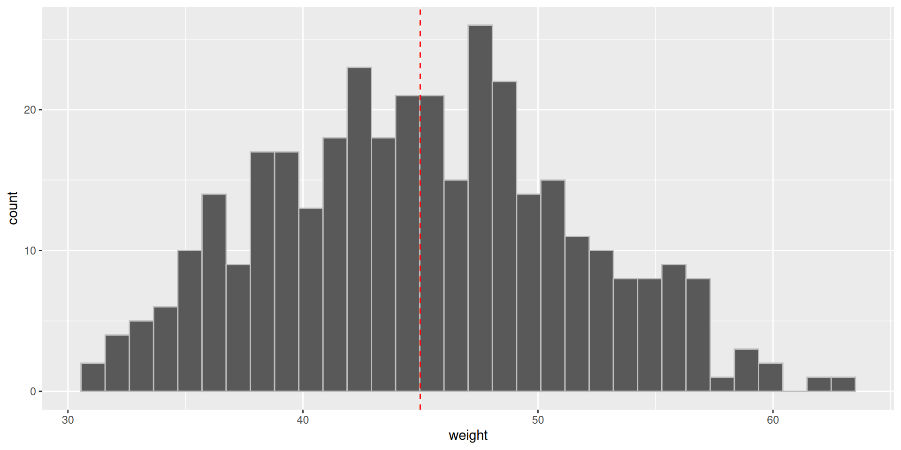
Model definition (Weight)
\[ \begin{align} \text{weight}_i &\sim \text{Normal}(\mu, \sigma) \\ \mu &\sim \text{Normal}(50, 10) \\ \sigma &\sim \text{Normal}(0, 10), \quad \sigma > 0 \end{align} \]
# A tibble: 3 × 10
variable mean median sd mad q5 q95 rhat ess_bulk ess_tail
<chr> <dbl> <dbl> <dbl> <dbl> <dbl> <dbl> <dbl> <dbl> <dbl>
1 lp__ -832. -831. 0.990 0.725 -833. -831. 1.00 1948. 2710.
2 mu 45.0 45.0 0.353 0.362 44.4 45.6 1.00 2926. 2215.
3 sigma 6.47 6.46 0.242 0.243 6.08 6.88 1.00 3216. 2588.Vertical plot
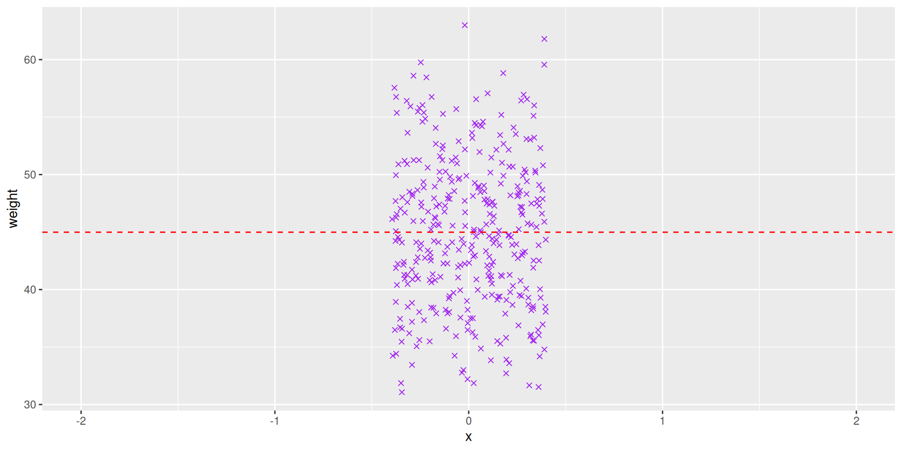
Vertical plot (sex differentiated)
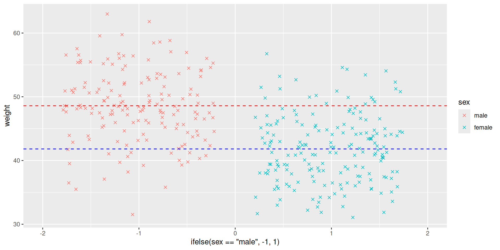
Model (Weight ~ Sex)
\[ \begin{align} \text{weight}_i &\sim \text{Normal}(\mu_i, \sigma) \\ \mu_i &= \alpha_{\text{sex}[i]} \\ \alpha_j &\sim \text{Normal}(50, 10) \\ \sigma &\sim \text{Normal}(0, 10), \quad \sigma > 0 \end{align} \]
# A tibble: 4 × 10
variable mean median sd mad q5 q95 rhat ess_bulk ess_tail
<chr> <dbl> <dbl> <dbl> <dbl> <dbl> <dbl> <dbl> <dbl> <dbl>
1 lp__ -776. -775. 1.15 0.952 -778. -774. 1.00 1900. 2603.
2 alpha[mal… 48.6 48.6 0.428 0.424 47.9 49.3 1.00 4042. 2562.
3 alpha[fem… 41.8 41.8 0.403 0.411 41.2 42.5 1.00 4261. 2940.
4 sigma 5.52 5.52 0.201 0.202 5.20 5.86 1.00 4819. 3455.Scatter plot (with height)
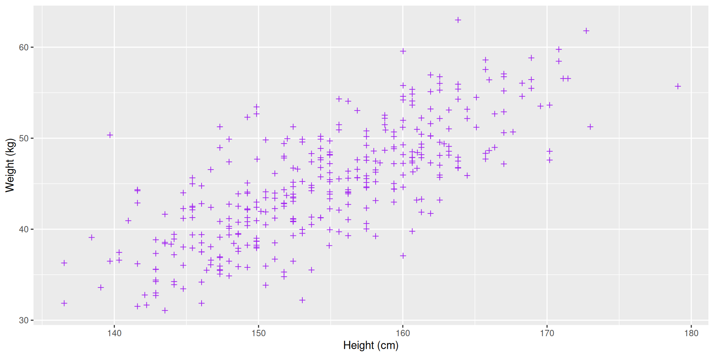
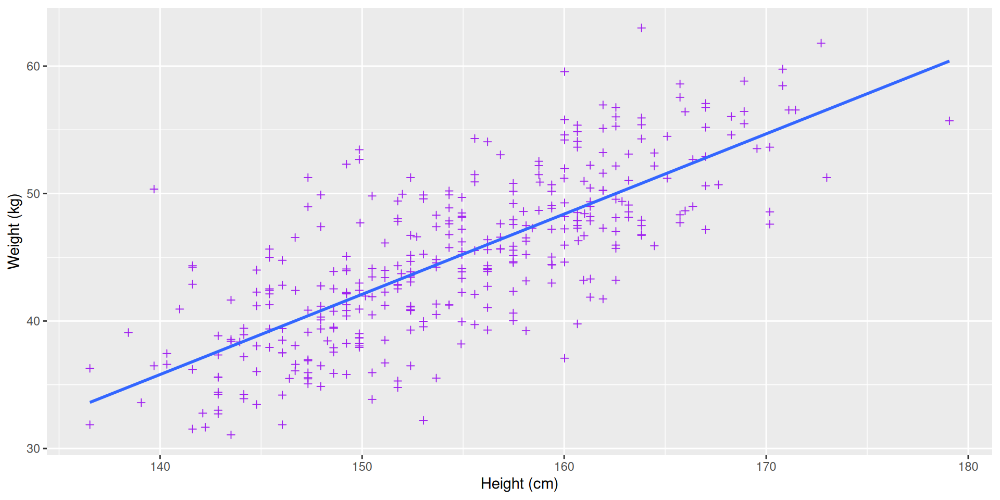
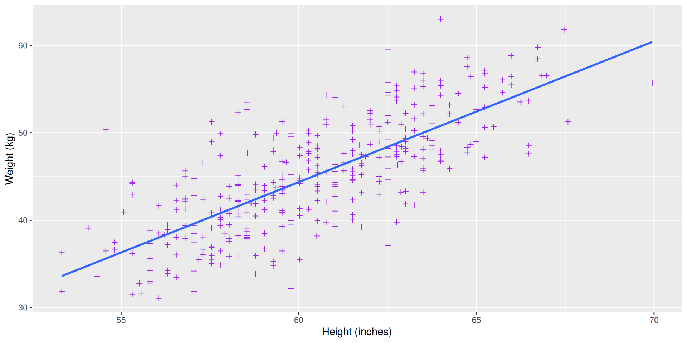
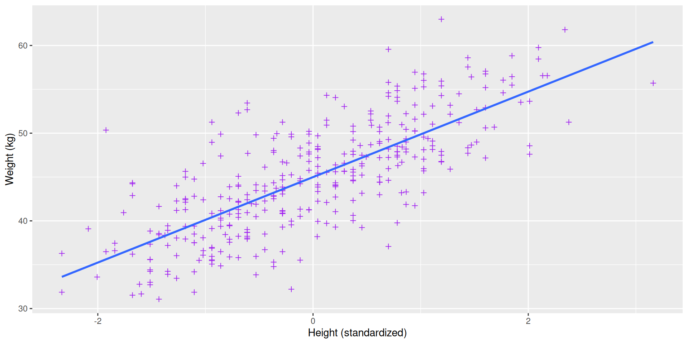
Model (Weight ~ Height)
\[ \begin{align} \text{weight}_i &\sim \text{Normal}(\mu_i, \sigma) \\ \mu_i &= \alpha + \beta\times \text{height}_i \\ \alpha &\sim \text{Normal}(50, 10) \\ \beta &\sim \text{Normal}(0, 10) \\ \sigma &\sim \text{Normal}(0, 10), \quad \sigma > 0 \end{align} \]
# A tibble: 4 × 10
variable mean median sd mad q5 q95 rhat ess_bulk ess_tail
<chr> <dbl> <dbl> <dbl> <dbl> <dbl> <dbl> <dbl> <dbl> <dbl>
1 lp__ -687. -687. 1.22 1.00 -689. -686. 1.00 2043. 2730.
2 alpha 45.0 45.0 0.230 0.228 44.6 45.4 1.00 4633. 3092.
3 beta 4.81 4.81 0.224 0.223 4.44 5.18 1.00 3690. 2940.
4 sigma 4.25 4.25 0.160 0.164 4.00 4.52 1.00 4424. 2764.Models tell stories
Model (Weight ~ Sex + Height)
\[ \begin{align} \text{weight}_i &\sim \text{Normal}(\mu_i, \sigma) \\ \mu_i &= \alpha_{\text{sex}[i]} + \beta\times \text{height}_i \\ \alpha_j &\sim \text{Normal}(50, 10) \\ \beta &\sim \text{Normal}(0, 10) \\ \sigma &\sim \text{Normal}(0, 10), \quad \sigma > 0 \end{align} \]
# A tibble: 5 × 10
variable mean median sd mad q5 q95 rhat ess_bulk ess_tail
<chr> <dbl> <dbl> <dbl> <dbl> <dbl> <dbl> <dbl> <dbl> <dbl>
1 lp__ -687. -687. 1.40 1.22 -690. -686. 1.00 2109. 3035.
2 alpha[mal… 45.0 45.0 0.396 0.394 44.4 45.7 1.00 2729. 2535.
3 alpha[fem… 45.0 45.0 0.384 0.385 44.3 45.6 1.000 2991. 2777.
4 beta 4.79 4.79 0.307 0.305 4.28 5.28 1.00 2592. 2991.
5 sigma 4.26 4.26 0.166 0.167 4.00 4.55 1.00 3649. 2582.Understanding global birth rates
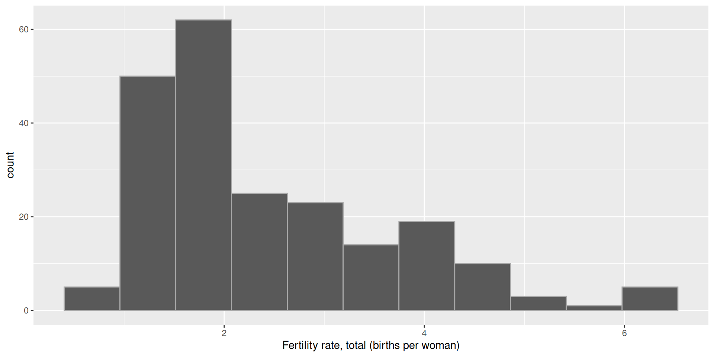
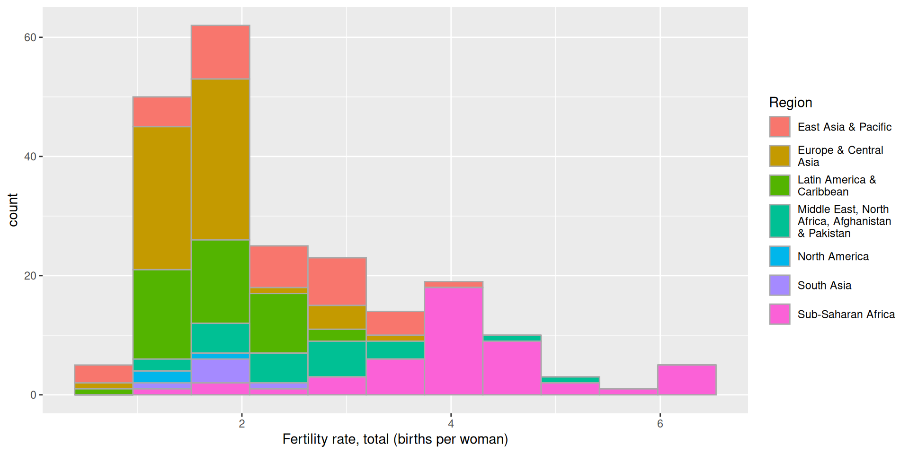
Birthrate ~ Women’s College Enrollment
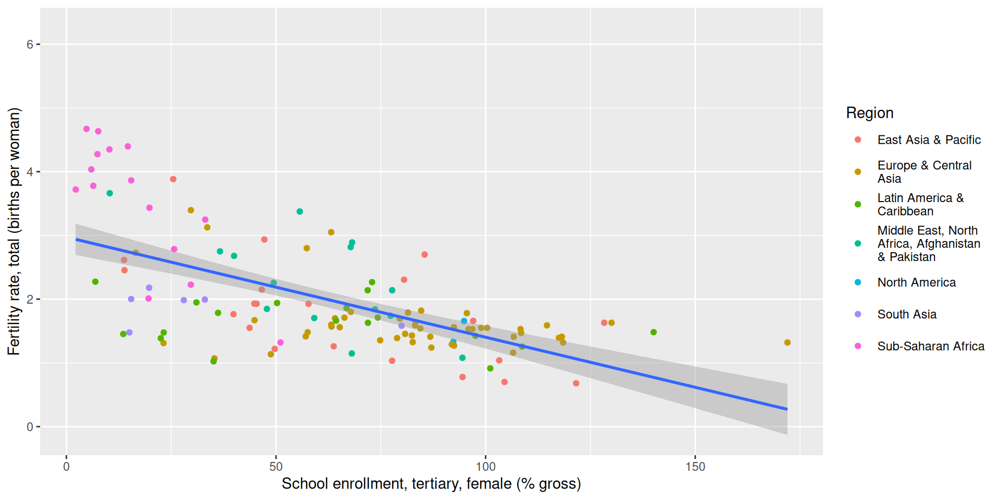
Birthrate ~ Infant Mortality
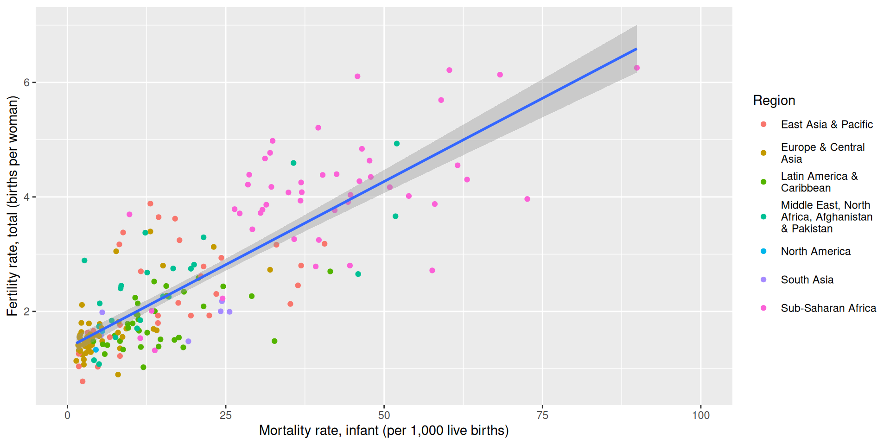
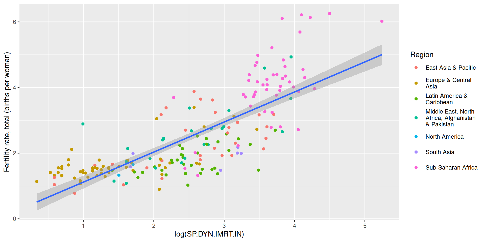
Data: no meaning without a story
Model (Fertility ~ Women in College)
# A tibble: 4 × 10
variable mean median sd mad q5 q95 rhat ess_bulk ess_tail
<chr> <dbl> <dbl> <dbl> <dbl> <dbl> <dbl> <dbl> <dbl> <dbl>
1 lp__ -17.8 -17.5 1.20 1.00 -20.2 -16.5 1.00 1878. 2737.
2 alpha 1.98 1.98 0.0637 0.0630 1.88 2.09 1.00 4563. 2671.
3 beta -0.553 -0.552 0.0616 0.0597 -0.656 -0.450 0.999 3655. 2835.
4 sigma 0.695 0.694 0.0434 0.0444 0.629 0.771 1.000 3834. 2933.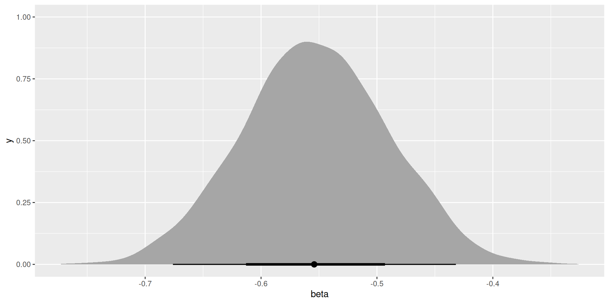
Model (Fertility ~ Infant Mortality)
# A tibble: 4 × 10
variable mean median sd mad q5 q95 rhat ess_bulk ess_tail
<chr> <dbl> <dbl> <dbl> <dbl> <dbl> <dbl> <dbl> <dbl> <dbl>
1 lp__ -53.0 -52.7 1.16 0.959 -55.1 -51.7 1.01 562. 724.
2 alpha 2.49 2.49 0.0526 0.0514 2.40 2.57 1.00 1007. 621.
3 beta 0.968 0.970 0.0557 0.0561 0.869 1.06 1.00 945. 908.
4 sigma 0.792 0.790 0.0404 0.0422 0.728 0.861 1.00 816. 840.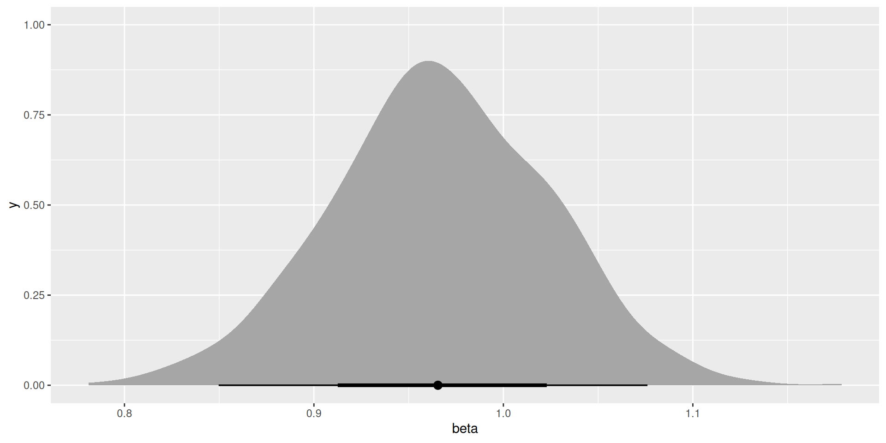
Model (Fertility ~ Women in College + Infant Mortality)
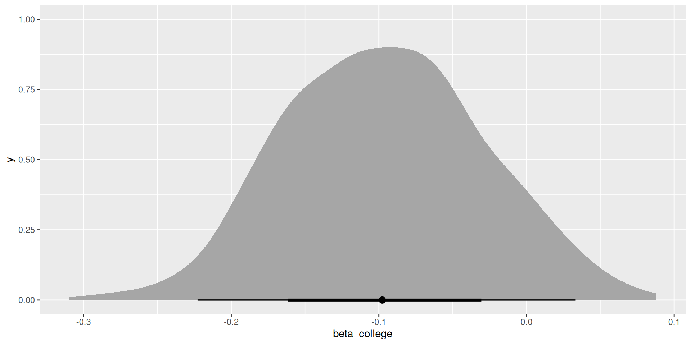
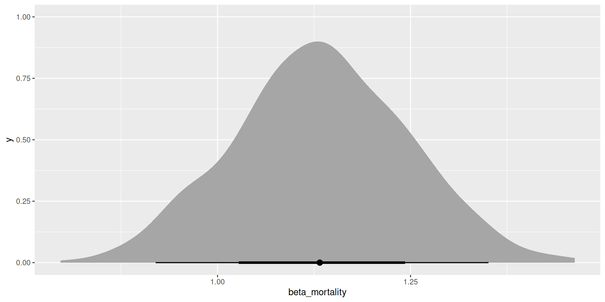
# A tibble: 5 × 10
variable mean median sd mad q5 q95 rhat ess_bulk ess_tail
<chr> <dbl> <dbl> <dbl> <dbl> <dbl> <dbl> <dbl> <dbl> <dbl>
1 lp__ 19.9 20.2 1.46 1.30 17.1 21.6 1.00 509. 811.
2 alpha 2.41 2.41 0.0618 0.0615 2.31 2.51 1.00 437. 652.
3 beta_col… -0.0965 -0.0977 0.0668 0.0697 -0.199 0.0162 1.00 438. 657.
4 beta_mor… 1.12 1.12 0.116 0.112 0.934 1.32 1.00 418. 556.
5 sigma 0.511 0.508 0.0338 0.0330 0.460 0.569 1.00 819. 660.